第 11 章
主窗口
本章共 3 个小节 · PySide6 Basic Tutorial
本章要点：
QMainWindow 类
停靠窗口（QDockWidget）
多文档接口（MDI）
11.1
QMainWindow
作为标准的应用程序主窗口，QMainWindow 类搭建了用户界面的基础框架。QMainWindow 类既可以像 QWidget 类那样创建简单（空白客户区域，无菜单栏、状态栏等组件）的顶层窗口，也可以构建功能相对完整的 SDI（单窗体应用程序）或 MDI（多窗体应用程序）窗口。
调用 setLayout 方法会破坏 QMainWindow 的布局，因为 QMainWindow 类拥有专用布局，这些布局使其能够管理菜单栏、工具栏、状态栏以及 Dock 窗口停靠栏。图11-1出自 Qt 的官方文档，它描述了 QMainWindow 类的布局。
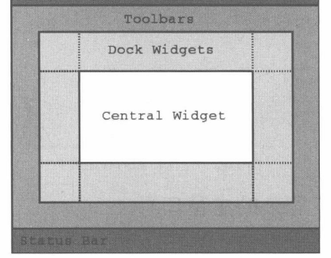
图 11-1 QMainWindow 类的布局
Central Widget 是 QMainWindow 的内容区域(客户区域)，可以设置为 QWidget 对象或从 QWidget类派生的对象。
11.1.1 示例：设置主窗口的内容组件本示例将演示如何使用 setCentralWidget 方法为 QMainWindow 设置内容组件。若要获取内容组件，可以调用 centralWidget 方法。
示例的核心代码如下：
#初始化主窗口
mainWindow = QMainWindow()
mainWindow.setWindowTitle("My App")
mainWindow.resize(350, 320)
#初始化 QFrame 组件
frame = QFrame()
#创建布局
layout = QGridLayout(frame)
#创建4个按钮组件
btnA = QPushButton("按钮 1", frame)
btnB = QPushButton("按钮 2", frame)
btnC = QPushButton("按钮 3", frame)
btnD = QPushButton("按钮 4", frame)
#将按钮放入布局中
layout.addWidget(btnA, 0, 0)
layout.addWidget(btnB, 0, 1)
layout.addWidget(btnC, 1, 0)
layout.addWidget(btnD, 1, 1)
#将QFrame对象设置为主窗口的内容组件
mainWindow.setCentralWidget(frame)
#显示主窗口
mainWindow.showNormal()
当调用 setCentralWidget方法设置内容组件后，QMainWindow类自动把目标组件纳入子级对象列表中，并且会自动删除目标组件实例。因此，在本示例中，QFrame类在实例化时不需要指定父级对象。
示例程序的运行效果如图11-2所示。
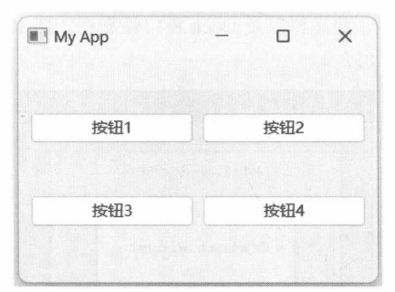
图 11-2 主窗口的内容组件
11.1.2 示例：构建较复杂的主窗口在菜单栏和工具栏的示例中，读者已了解过menuBar、addToolBar等方法的使用。本示例将在QMainWindow中创建菜单栏、工具栏和状态栏，并且设置内容组件。构建一个较为完整的应用程序窗口。
示例的实现步骤如下。
初始化主窗口。 window = QMainWindow()
#设置窗口标题
window.setWindowTitle("示例程序")
创建 QAction 对象，可在菜单栏与工具栏之间共享。 actionOpen = QAction(QIcon("open.png"), "打开", window)
actionClose = QAction(QIcon("close.png"), "关闭", window)
actionSave = QAction(QIcon("save.png"), "保存", window)
actionZoomIn = QAction(QIcon("zoom-in.png"), "放大", window)
actionZoomOut = QAction(QIcon("zoom-out.png"),"缩小", window)
actionPlay = QAction(QIcon("play.png"), "播放", window)
actionStop = QAction(QIcon("stop.png"), "停止", window)
初始化菜单栏。 menubar = window.menuBar()
#“文件"菜单
filemenu = menubar.addMenu("文件")
filemenu.addAction(actionOpen)
filemenu.addAction(actionClose)
filemenu.addAction(actionSave)
#"控制"菜单
controlmenu = menubar.addMenu("控制")
controlmenu.addAction(actionZoomIn)
controlmenu.addAction(actionZoomOut)
controlmenu.addAction(actionPlay)
controlmenu.addAction(actionStop)
初始化工具栏。本示例创建了两个工具栏实例。 #第一个工具栏
toolbar1 = QToolBar()
toolbar1.addAction(actionOpen)
toolbar1.addAction(actionSave)
toolbar1.addAction(actionClose)
window.addToolBar(toolbar1)
#第二个工具栏
toolbar2 = QToolBar()
toolbar2.addAction(actionZoomIn)
toolbar2.addAction(actionZoomOut)
toolbar2.addAction(actionPlay)
toolbar2.addAction(actionStop)
window.addToolBar(toolbar2)
初始化状态栏。 statusbar = window.statusBar()
#添加到状态栏的组件
label = QLabel()
img = QPixmap("info.png")
#调整图标大小
img = img.scaled(16, 16)
label.setPixmap(img)
statusbar.addPermanentWidget(label)
#添加文本消息
statusbar.showMessage("准备就绪")
创建主窗口的内容组件。 #创建文本编辑组件
edit = QPlainTextEdit(window)
#去除边框
edit.setFrameShape(QFrame.Shape.NoFrame)
#设置主窗口的内容组件
window.setCentralWidget(edit)
上述代码创建了QPlainTextEdit组件实例，它与QTextEdit组件类似，用于输入/编辑普通文本内容。
调用 setFrameShape（NoFrame)的作用是去除边框，使QPlainTextEdit组件的整体外观与主窗口更协调。
显示应用程序窗口。 window.show()
示例程序的运行结果如图11-3所示。
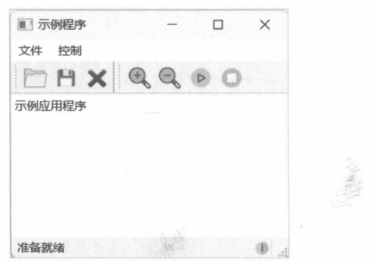
图11-3 比较完整的应用程序窗口
11.1.3 示例：在运行阶段添加或删除工具栏addToolBar方法可向主窗口添加工具栏，removeToolBar方法则用于删除主窗口中指定的工具栏。
removeToolBar方法在删除工具栏时仅仅是将其隐藏，并没有删除 QToolBar实例。本示例将演示通过QCheckBox组件添加或删除工具栏。
下面是MyMainWindow类的实现代码。
class MyMainWindow(QMainWindow):
def __init__(self):
super().__init__()
#创建 action 对象
self.action1 = QAction(QIcon("bus1.png"), "Bus A")
self.action2 = QAction(QIcon("bus2.png"), "Bus B")
self.action3 = QAction(QIcon("bus3.png"), "Bus C")
self.action4 = QAction(QIcon("bus4.png"), "Bus D")
self.action5 = QAction(QIcon("bus5.png"), "Bus E")
self.action6 = QAction(QIcon("bus6.png"), "Bus F")
#两个工具栏
self.toolbar1 = QToolBar()
self.toolbar1.addAction(self.action1)
self.toolbar1.addAction(self.action2)
self.toolbar1.addAction(self.action3)
self.toolbar2 = QToolBar()
self.toolbar2.addAction(self.action4)
self.toolbar2.addAction(self.action5)
self.toolbar2.addAction(self.action6)
#创建内容组件
content = QFrame(self)
content.setFrameShape(QFrame.Shape.Panel)
#布局
layout = QVBoxLayout()
content.setLayout(layout)
#两个 checkbox 组件
ckbToolbar1 = QCheckBox("显示工具栏1", content)
ckbToolbar2 = QCheckBox("显示工具栏 2", content)
layout.addWidget(ckbToolbar1)
layout.addWidget(ckbToolbar2)
self.setCentralWidget(content)
#连接toggled信号
ckbToolbar1.toggled.connect(self.onToggled1)
ckbToolbar2.toggled.connect(self.onToggled2)
def onToggled1(self, checked: bool):
if checked:
self.addToolBar(self.toolbar1)
if not self.toolbar1.isVisible():
self.toolbar1.show()
else:
self.removeToolBar(self.toolbar1)
def onToggled2(self, checked: bool):
if checked:
self.addToolBar(self.toolbar2)
if not self.toolbar2.isVisible():
self.toolbar2.show()
else:
self.removeToolBar(self.toolbar2)
上述代码在 __init__ 方法中创建 6 个 QAction 对象，分别由两个 QToolBar 对象使用。两个 QCheckBox 组件用于控制添加或删除工具栏操作。toggled 信号分别与 onToggled1、onToggled2 方法连接。
由于用户可以通过 QCheckBox组件反复添加和删除工具栏，并且在删除工具栏时 QMainWindow类会把工具栏隐藏。因此，为了确保工具栏被添加到主窗口后能够正常显示，在调用addToolBar方法之后需要判断一下工具栏的isVisible方法是否返回False。如果返回False表示工具栏已隐藏，此时要调用 show方法将它显示出来。
运行示例程序，选中窗口上的复选框，即可显示工具栏，如图11-4所示。
取消复选框，工具栏就会删除，如图11-5所示。
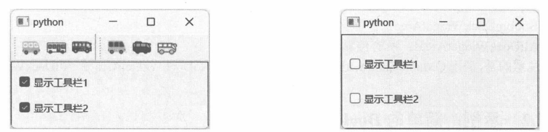
图 11-4 已添加工具栏
11.2
QDockWidget
QDockWidget 组件（停靠窗口）既可以停靠在主窗口（QMainWindow）内，也可以作为顶层窗口浮动于桌面上。当 QDockWidget 停靠在 QMainWindow 内部时，它会显示标题栏、关闭按钮和浮动按钮；单击 QDockWidget 组件的浮动按钮，就会切换到独立窗口状态，成为顶层窗口。浮动窗口上显示标题栏以及关闭按钮。
QDockWidget组件可以通过以下构造函数设置标题文本：
def __init__(self, title: str, parent: Optional[QWidget] =..., flags: Qt.WindowType =...)
title参数可以指定停靠窗口的标题。如果在调用构造函数时未指定标题文本，还可以通过setWindowTitle方法来设置。若需要自定义整个标题栏，可以使用 setTitleBarWidget方法。该方法直接将QWidget对象设置为停靠窗口的标题栏，但标题文本、关闭按钮等元素需要开发人员自己完成。
QDockWidget组件默认只显示标题栏，不显示内容，需要调用 setWidget方法设置一个内容组件。
QDockWidget组件初始化完成后，可以调用 QMainWindow.addDockWidget方法将它添加到主窗口内。如果主窗口有工具栏，那么停靠窗口将位于工具栏和CentralWidget（主窗口的内容组件）之间，如图11-6所示。
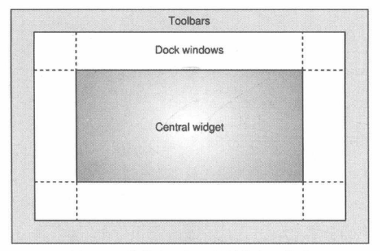
图11-6 停靠窗口与工具栏的布局关系
11.2.1 DockWidgetAreaQt.DockWidgetArea枚举定义了QDockWidget组件在主窗口内的停靠位置，它的成员如下（该枚举值可以组合使用)。
NoDockWidgetArea：无停靠区域。
LeftDockWidgetArea：停靠区域为主窗口的左侧。
RightDockWidgetArea：停靠区域为主窗口的右侧。
TopDockWidgetArea：停靠区域为主窗口的顶部。
BottomDockWidgetArea：停靠区域为主窗口的底部。
AllDockWidgetAreas：所有停靠区域。
需要注意的是，调用 QMainWindow.addDockWidget 方法时，NoDockWidgetArea 和 AllDockWidgetAreas无效。
11.2.2 示例：简单的 Dock 窗口本示例将初始化3个QDockWidget实例，依次停靠于主窗口的左侧、底部和右侧，具体实现步骤如下。
初始化主窗口。 win = QMainWindow()
#设置主窗口标题
win.setWindowTitle("Dock Widgets Demo")
实例化 3 个 QDockWidget 对象。 dock1 = QDockWidget("项目")
dock2 = QDockWidget("数据库")
dock3 = QDockWidget("性能测试")
分别设置 3 个 QDockWidget 对象的内容组件。 dock1.setWidget(QLabel("停靠在左边"))
dock2.setWidget(QLabel("停靠在底部"))
dock3.setWidget(QLabel("停靠在右边"))
将 3 个 QDockWidget 对象添加到主窗口中。 win.addDockWidget(Qt.DockWidgetArea.LeftDockWidgetArea, dock1)
win.addDockWidget(Qt.DockWidgetArea.BottomDockWidgetArea, dock2)
win.addDockWidget(Qt.DockWidgetArea.RightDockWidgetArea, dock3)
设置主窗口的内容组件。 content = QLabel("内容区域")
#设置文本居中对齐
content.setAlignment(Qt.AlignmentFlag.AlignCenter)
#修改文本字号
font = content.font()
font.setPixelSize(18)
content.setFont(font)
#设置边框形状
content.setFrameShape(QFrame.Shape.Box)
win.setCentralWidget(content)
显示主窗口。 win.show()
运行示例程序，效果如图11-7所示。
用鼠标左键按住停靠窗口的标题栏，然后进行拖动，可以调整停靠窗口的位置。如图11-8所示，拖动“数据库”窗口到主窗口的顶部区域，主窗口会显示可停靠提示。
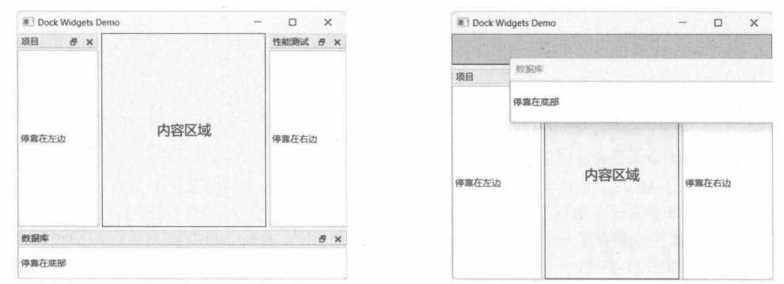
图 11-7 停靠窗口的呈现效果
松开鼠标左键，原本位于主窗口底部的“数据库”窗口就被移动到顶部区域了，如图11-9所示。
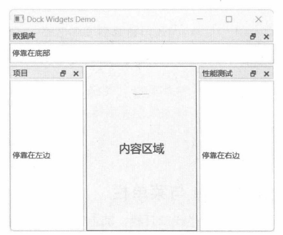
图11-9 停靠窗口的位置已改变
11.2.3 allowedAreas 属性该属性（包含 allowedAreas 和 setAllowedAreas 方法）用于设置 QDockWidget 允许的停靠区域。此设置仅限制用户在拖动窗口时的可用区域，对 QMainWindow.addDockWidget方法所指定的停靠区域没有影响。
假设 QDockWidget.setAllowedAreas 方法指定的值是 RightDockWidgetArea，而 QMainWidget.addDockWidget 方法指定 QDockWidget 对象的停靠位置为 TopDockWidgetArea。那么在应用程序运行后，QDockWidget 对象的初始位置是主窗口的顶部。当用户拖动 QDockWidget 对象后，由于受到 allowedAreas 属性的约束，用户只能把 QDockWidget 对象拖放到主窗口的右侧区域，其他区域均失效。
上述内容可通过以下示例来验证。
#创建主窗口
window = QMainWindow()
#设置主窗口的内容组件
content = QLabel("内容区域")
content.setAlignment(Qt.AlignmentFlag.AlignCenter)
window.setCentralWidget(content)
#初始化 QDockWidget
dock = QDockWidget("停靠窗口")
#设置允许的停靠区域
dock.setAllowedAreas(
Qt.DockWidgetArea.TopDockWidgetArea |
Qt.DockWidgetArea.BottomDockWidgetArea
)
#初始化时将 dock 放在左侧区域
window.addDockWidget(Qt.DockWidgetArea.LeftDockWidgetArea, dock)
#显示主窗口
window.showNormal()
上述代码将QDockWidget对象的有效停靠区域限制为主窗口的顶部或底部，但在添加到主窗口时设定的位置是窗口左侧。应用程序运行后，QDockWidget对象位置窗口左侧，如图11-10所示。
按住鼠标左键拖动停靠窗口的标题栏，并在主窗口内部移动。此时，只有窗口的顶部和底部区域能接受停靠窗口，如图11-11所示。
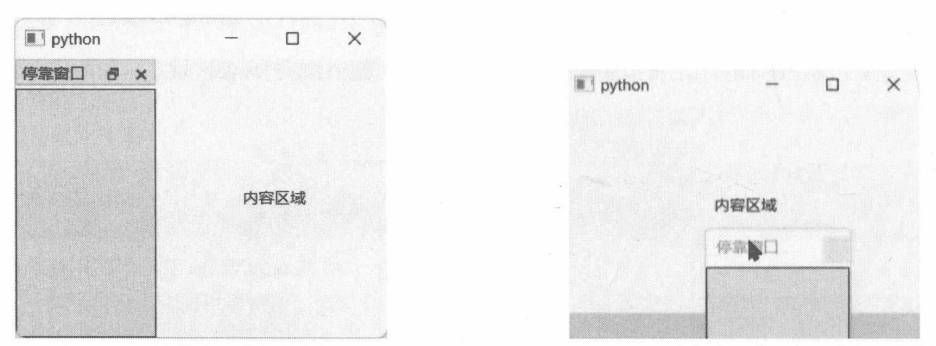
图 11-10 停靠窗口的初始位置
11.2.4 示例：QDockWidget 与菜单栏默认情况下，如果主窗口中包含菜单栏或工具栏，其上下文菜单中会自动添加所有 QDockWidget窗口的标题选项。通过上下文菜单可以显示或关闭QDockWidget窗口。但是，如果主窗口不包含菜单栏和工具栏，当所有QDockWidget窗口都关闭后，就无法重新打开（除非重新运行应用程序)。本示例将演示如何通过菜单栏重新打开 QDockWidget 窗口。
QDockWidget 类公开 toggleViewAction 方法，返回与当前 QDockWidget 关联的 QAction 对象。该QAction对象可以直接添加到菜单中，Qt已实现显示/关闭QDockWidget窗口的功能。
本示例创建了自定义类MyWindow，它派生自QMainWindow类，具体代码如下：
class MyWindow(QMainWindow):
def __init__(self):
super().__init__()
#初始化两个 Dock 窗口
self.dock1 = QDockWidget("窗口1")
self.dock1.setWidget(QLabel("窗口视图"))
self.dock1.setAllowedAreas(
Qt.DockWidgetArea.LeftDockWidgetArea |
Qt.DockWidgetArea.RightDockWidgetArea
)
self.dock2 = QDockWidget("窗口 2")
self.dock2.setWidget(QLabel("窗口视图"))
self.dock2.setAllowedAreas(
Qt.DockWidgetArea.LeftDockWidgetArea |
Qt.DockWidgetArea.RightDockWidgetArea
)
self.dock1.setStyleSheet(custstyle)
self.dock2.setStyleSheet(custstyle)
self.addDockWidget(Qt.DockWidgetArea.LeftDockWidgetArea, self.dock1)
self.addDockWidget(Qt.DockWidgetArea.RightDockWidgetArea, self.dock2)
#创建菜单栏
menubar = self.menuBar()
menu = menubar.addMenu("窗口")
#将 Dock 窗口的 Action 添加到菜单中
menu.addAction(self.dock1.toggleViewAction())
menu.addAction(self.dock2.toggleViewAction())
#设置内容区域
central = QLabel("内容区域")
central.setStyleSheet("background-color: lightgreen")
central.setAlignment(Qt.AlignmentFlag.AlignCenter)
self.setCentralWidget(central)
上述代码中主窗口中先创建两个 QDockWidget 实例，接着初始化菜单栏。最后访问 toggleViewAction 方法，分别将两个 QDockWidget 实例相关的 QAction 对象添加到菜单栏中。
运行示例程序后，将窗口左、右两侧的停靠窗口关闭，然后执行菜单“窗口”→“窗口1”重新显示“窗口1”，如图11-12所示。
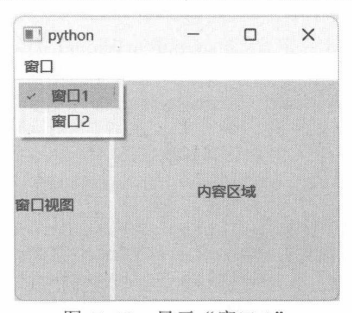
图 11-12 显示“窗口1”
重新显示“窗口2”的方法也一样。另外，在菜单栏的空白区域右击，也可以使用上下文菜单来显示或关闭停靠窗口。这是 Qt 内部已实现的功能。
11.3
MDI
MDI（Multiple Document Interface，多文档界面）应用程序可以同时打开多个文档，如 Web 浏览器的标签页能在同一时间加载不同的页面。MDI应用程序在未打开任何文档时仅显示主窗口；当打开文档时，MDI应用程序会创建子窗口，并在子窗口中加载文档。子窗口同样具备标题栏、最大化、最小化、关闭按钮以及窗口框架。虽然子窗口在形制上与普通窗口一样，但它们只能在MDI主窗口内活动，不能放置到主窗口外。
与MDI应用程序相对应的是 SDI（Single Document Interface，单文档界面）应用程序。SDI应用程序在同一时间只能打开一个文档，一般只有主窗口，不具备子窗口。
要在 QMainWindow 成为 MDI 主窗口，需要使用 QMdiArea类。该类派生自 QAbstractScrollArea，在QMdiArea的构造函数中已禁用滚动条，因此MDI区域默认是不会显示滚动条的。调用QMainWindow.setCentralWidget方法将 QMdiArea 设置为内容组件后，就可以呈现 MDI子窗口了。
11.3.1 添加子窗口子窗口由QMdiSubWindow类封装，包含子窗口的基础框架和标题栏，其内容区域由自定义的QWidget 对象组成。QMdiArea的子级对象必须是 QMdiSubWindow类型。
调用 QMdiArea类的 addSubWindow方法可以添加子窗口。该方法的声明如下：
def addSubWindow(widget: QWidget, flags: Qt.WindowType = ...) -> QMdiSubWindow
如果widget参数引用的是QMdiSubWindow类型的组件，那么直接添加到子窗口列表中；如果widget参数是 QWidget 或其他自定义组件类型，那么需要先创建 QMdiSubWindow 实例，再将 widget 设置为QMdiSubWindow实例的内容组件，最后才将QMdiSubWindow实例添加到子窗口列表中。要从QMdiArea中删除某个子窗口，请调用removeSubWindow方法。
在调用QMdiSubWindow类的构造函数时将QMdiArea对象传递给parent参数，也可以添加子窗口，即将 QMdiArea 对象作为新QMdiSubWindow实例的父级对象，如下面的代码所示：
mdicontainer = QMdiArea()
subwindow = QMdiSubWindow(mdicontainer)
subwindow.setWidget(...)
11.3.2 示例：简单的MDI应用程序本示例将演示一个简单的 MDI 应用程序。主窗口的工具栏上有 3 个按钮，分别用于新建子窗口、删除活动窗口、关闭所有子窗口。
具体的实现步骤如下。
定义CustContentWidget类，基类是QWidget，该类将用作子窗口的内容组件。 class CustContentWidget(QWidget):
def __init__(self, parent: QWidget = None):
super().__init__(parent)
#创建标签组件
self.lb = QLabel(self)
#设置文本颜色
palette = QPalette(self.lb.palette())
palette.setColor(QPalette.ColorRole.WindowText, QColor("blue"))
self.lb.setPalette(palette)
def setContentText(self, str):
self.lb.setText(str)
上述内容组件中包含一个标签（QLabel)，通过 setContentText方法为QLabel对象设置文本。
定义 MyWindow 类，从 QMainWindow 类派生。 class MyWindow(QMainWindow):
......
在__init__方法中初始化 QMdiArea 组件。 self.mdiarea = QMdiArea()
self.setCentralWidget(self.mdiarea)
创建 QMdiArea 实例后，还需要调用 QMainWindow 类的 setCentralWidget 方法将 QMdiArea 对象设置为内容组件。
调用setToolButtonStyle方法修改工具栏按钮的呈现方式为图标和文本，且文本位于图标的下方。 self.setToolButtonStyle(Qt.ToolButtonStyle.ToolButtonTextUnderIcon)
在QMainWindow实例上调用setToolButtonStyle方法会修改整个主窗口内所有工具栏的按钮呈现方式。若操作只针对某个工具栏，那么应当调用QToolBar实例的 setToolButtonStyle方法。
初始化工具栏，其中包含3个QAction对象。 #创建工具栏
toolbar = self.addToolBar("test")
#禁止移动工具栏
toolbar.setMovable(False)
#新建子窗口命令
actNew = QAction(QIcon("new-window.png"), "新建窗口", self)
toolbar.addAction(actNew)
#删除活动子窗口命令
actDel = QAction(QIcon("remove.png"),"删除活动窗口", self)
toolbar.addAction(actDel)
#关闭所有子窗口命令
actClose = QAction(QIcon("close.png"),"关闭所有窗口", self)
toolbar.addAction(actClose)
处理每个 QAction 对象的 triggered 信号，以实现工具栏按钮的功能。 actNew.triggered.connect(self.onNewWindow)
actDel.triggered.connect(self.onRemoveWindow)
actClose.triggered.connect(self.mdiarea.closeAllSubWindows)
对于关闭所有子窗口的QAction 对象，它的 triggered信号可以直接与 QMdiArea 对象的closeAllSubWindows 方法连接。
实现 onNewWindow方法，实现创建子窗口的功能。 def onNewWindow(self):
subwidget = CustContentWidget()
subwidget.setContentText("我是子窗口")
subwin = self.mdiarea.addSubWindow(subwidget)
#设置子窗口标题
subwin.setWindowTitle("new window")
#设置子窗口的大小
subwin.resize(240, 180)
#显示子窗口
subwin.show()
先实例化 CustContentWidget 对象，然后把它传递给 QMdiArea.addSubWindow 方法来创建新的子窗口。QMdiSubWindow实例创建后，其界面不可见，需要调用 show方法以显示窗口。
实现 onRemoveWindow 方法，从MDI 容器中删除活动的窗口。 def onRemoveWindow(self):
activeWin = self.mdiarea.activeSubWindow()
if activeWin is not None:
self.mdiarea.removeSubWindow(activeWin)
先调用QMdiArea对象的 activeSubWindow方法，查看是否有处于活动状态的子窗口。如果有，就通过 removeSubWindow 方法将其移除。
实例化并显示主窗口。 win = MyWindow()
#调整窗口大小
win.resize(450, 400)
#显示主窗口
win.show()
运行示例程序，单击工具栏上的“新建窗口”按钮，添加新的子窗口，如图11-13所示。
单击工具栏上的“关闭所有窗口”按钮，刚刚添加的所有子窗口全部关闭，如图11-14所示。
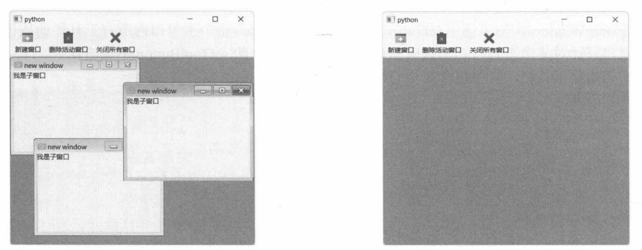
图 11-13 新建子窗口
11.3.3 示例：打开多个文本文件本示例将演示在MDI窗口中打开文件，每打开一个文件，就会创建新的子窗口来显示文件内容。
程序菜单栏中有两组菜单：“文件”菜单包含“打开文件”和“退出”命令；“窗口”菜单下将显示打开的子窗口列表。
示例的实现步骤如下。
定义 MyWindow类，它派生自 QMainWindow类。 class MyWindow(QMainWindow):
定义initMenuBar方法，功能是初始化菜单栏。 def initMenuBar(self):
menubar = self.menuBar()
#"文件"菜单
filemenu = menubar.addMenu("文件")
actOpen = filemenu.addAction(QIcon("open.png"), "打开...")
actOpen.triggered.connect(self.onFileOpen)
actExit = filemenu.addAction("退出")
actExit.triggered.connect(QApplication.quit)
#"窗口"菜单
self.windowmenu = menubar.addMenu("窗口")
self.windowmenu.triggered.connect(self.onWindowMenuAction)
self.windowmenu.aboutToShow.connect(self.updateWindowMenu)
“退出”菜单的 triggered 信号直接与 QApplication.quit方法连接即可，当命令被触发时，调用quit方法，退出应用程序。
定义 initMdiArea 方法，初始化 QMdiArea 组件。 def initMdiArea(self):
self.mdiarea = QMdiArea()
self.setCentralWidget(self.mdiarea)
在 MyWindow 类的 __init__ 方法中调用上述两个初始化方法。 def __init__(self):
super().__init__()
self.initMenuBar()
self.initMdiArea()
实现 onFileOpen方法，它与“打开…”菜单的触发信号连接，功能是弹出打开文件对话框让用户选择文本文件。在用户做出选择后，就创建子窗口，加载用户所选的文件。 def onFileOpen(self):
filename, _ = QFileDialog.getOpenFileName(
self, "选择文本文件", "", "文本文件(*.txt)"
)
if len(filename) > 0:
fileobj = QFile(filename)
if not fileobj.open(QIODeviceBase.OpenModeFlag.ReadOnly):
return
#加载文件
textstream = QTextStream(fileobj)
#读取所有文本
filecontent = textstream.readAll()
#关闭文件
fileobj.close()
#创建子窗口
textWidget = QPlainTextEdit()
textWidget.setPlainText(filecontent)
#设置为只读
textWidget.setReadOnly(True)
subwindow = self.mdiarea.addSubWindow(textWidget)
#子窗口标题为文件名
info = QFileInfo(filename)
subwindow.setWindowTitle(info.fileName())
#设置子窗口大小
subwindow.resize(245, 185)
#显示子窗口
subwindow.show()
QFileDialog.getOpenFileName 方法的原型如下：
@staticmethod
def getOpenFileName(
parent: QWidget,
caption: Optional[str] = ...,
dir: str = ...,
filter: str = ...,
selectedFilter: str = ...,
options: QFileDialog.Option = ...) -> Tuple[str, str]
parent参数指定对话框的父窗口，通常是当前应用程序窗口，该参数可以为None。caption参数指定文件对话框的标题文本，如“打开一个文件”。dir参数指定打开对话框时的初始目录，此参数可以为空，对话框默认选择应用程序的当前目录。filter参数用于筛选文件类型，只有符合条件的文件才会显示，如上述代码中的“本文件(*.txt)”，即只显示后缀为.txt的文件。当filter参数指定了多个文件类型筛选器时，selectedFilter参数指定默认的筛选器。options参数是 QFileDialog组件相关的选项。本示例省略 selectedFilter 和 options 参数。
getOpenFileName方法返回两个字符串对象：第一个是用户选择的文件路径，第二个是与该文件相关的筛选器（filter）。
读取文件时先创建QFile实例，然后调用 open方法打开文件，否则无法读写。使用QTextStream类以文本流的方式读出文件中的文本，readAll方法读取文件中所有文本。
在子窗口中，使用QPlainTextEdit组件来加载已读取的文本内容。
“窗口”菜单的aboutToShow信号在菜单项弹出之前发出。连接此信号，可以在显示菜单前添加子窗口列表。以下是updateWindowMenu方法的实现代码。 def updateWindowMenu(self):
#清空现有的菜单命令
for a in self.windowmenu.actions():
self.windowmenu.removeAction(a)
#添加菜单项
for wind in self.mdiarea.subWindowList():
act = self.windowmenu.addAction(wind.windowTitle())
act.setData(wind)
上述代码先清除“窗口”菜单中所有命令，然后根据已打开的子窗口来创建菜单命令。在添加QAction对象时，将子窗口的引用关联到QAction对象的用户数据中（调用 setData方法）。当与子窗口对应的菜单命令被触发时，可以从data中获取 QMdiSubWindow对象的引用。
实现 onWindowMenuAction方法。当“窗口”菜单下的命令被触发时会调用 onWindowMenuAction方法。 def onWindowMenuAction(self, action: QAction):
window: QMdiSubWindow = action.data()
if window is not None:
self.mdiarea.setActiveSubWindow(window)
在向菜单添加 QAction 对象时，已将子窗口引用设置到 data属性中，因此访问 QAction 对象的 data方法可以得到 QMdiSubWindow 对象的引用。最后调用 QMdiArea 对象的 setActiveSubWindow 方法使子窗口处理活动状态。
运行示例程序，单击“文件”→“打开…”菜单，在打开文件对话框中选择文本文件，打开后文本内容将显示在子窗口中，如图11-15所示。
单击“窗口”菜单，可以从中选择要激活的窗口，如图11-16所示。
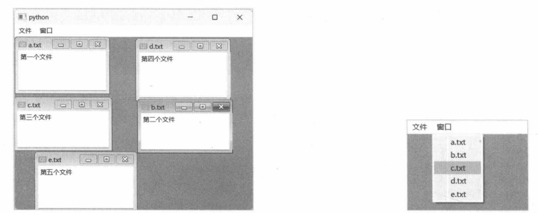
图 11-15 打开的文件
11.3.4 示例：排列子窗口本示例将演示在 QMdiArea 中排列子窗口的方法，主要用到 cascadeSubWindows 和 tileSubWindows方法。具体实现步骤如下。
定义 MyWindow 类，基类是 QMainWindow。 class MyWindow(QMainWindow):
......
定义 __init__ 方法。 def __init__(self):
#调用基类的构造函数
super().__init__()
......
初始化 QMdiArea 组件。 self.mdiArea = QMdiArea()
self.setCentralWidget(self.mdiArea)
添加4个子窗口。 comp1 = CustWidget()
comp1.setFillColor(QColor("green"))
comp1.setStrokeColor(QColor("gray"))
comp1.setStrokeWidth(2.0)
subwin1 = self.mdiArea.addSubWindow(comp1)
subwin1.resize(100, 80)
subwin1.show()
comp2 = CustWidget()
comp2.setFillColor(QColor("red"))
comp2.setStrokeColor(QColor("darkblue"))
comp2.setStrokeWidth(2.5)
subwin2 = self.mdiArea.addSubWindow(comp2)
subwin2.resize(90, 85)
subwin2.show()
comp3 = CustWidget()
comp3.setFillColor(QColor("#EE653A"))
comp3.setStrokeColor(QColor("red"))
comp3.setStrokeWidth(2.5)
subwin3 = self.mdiArea.addSubWindow(comp3)
subwin3.resize(135, 50)
subwin3.show()
comp4 = CustWidget()
comp4.setFillColor(QColor(15, 200, 18))
comp4.setStrokeColor(QColor(50, 25, 195))
comp4.setStrokeWidth(1.5)
subwin4 = self.mdiArea.addSubWindow(comp4)
subwin4.resize(115, 95)
subwin4.show()
子窗口的内容组件使用的是 CustWidget 类，它的实现代码如下：
class CustWidget(QWidget):
def __init__(self, parent: QWidget = None):
super().__init__(parent)
self._fillColor = QColor('yellow')
self._strokeColor = QColor('black')
self._strokeWidth = 1.0
def setFillColor(self, color: QColor):
self._fillColor = color
def setStrokeWidth(self, width: float):
self._strokeWidth = width
def setStrokeColor(self, color: QColor):
self._strokeColor = color
def paintEvent(self, event: QPaintEvent) -> None:
painter = QPainter(self)
#设置填充颜色
painter.setBrush(self._fillColor)
#设置笔
pen = QPen(self._strokeColor, self._strokeWidth)
painter.setPen(pen)
#绘制区域
rect = self.rect()
painter.drawRect(rect)
painter.end()
setFillColor方法用于设置图形的填充颜色，setStrokeColor方法用于设置图形轮廓的颜色，setStrokeWidth方法设置轮廓线条的宽度。
CustWidget类重写了paintEvent方法，在组件的客户区域内绘制矩形。
初始化工具栏。在工具栏上放入两个QPushButton组件。它们的clicked信号分别连接到QMdiArea对象的 cascadeSubWindows 和 tileSubWindows 方法。 toolbar = self.addToolBar("标准")
#添加按钮组件
btn1 = QPushButton("层叠排列")
btn1.clicked.connect(self.mdiArea.cascadeSubWindows)
toolbar.addWidget(btn1)
btn2 = QPushButton("平铺排列")
btn2.clicked.connect(self.mdiArea.tileSubWindows)
toolbar.addWidget(btn2)
cascadeSubWindows方法会以层叠方式排列子窗口，所有子窗口将被折叠，并按Z次序排列。
tileSubWindows方法将以平铺方式排列子窗口，窗口的大小相等，并在MDI容器的有效空间内自动排列。
实例化 MyWindow窗口，并显示于屏幕上。 window = MyWindow()
window.resize(400,300)
window.show()
运行应用程序，单击工具栏上的“层叠排列”按钮，所有子窗口被折叠，如图11-17所示。
单击“平铺排列”按钮，子窗口将平均分配MDI容器的空间，如图11-18所示。
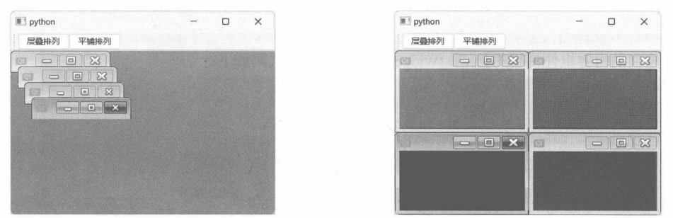
图 11-17 层叠窗口
虽然平铺窗口使所有子窗口处于可见状态，但同一时间只能有一个活动窗口。
11.3.5 示例：标签页视图QMdiArea.setViewMode 方法可以切换 MDI的视图，默认值是 SubWindowView，即子窗口视图。若要切换到标签页视图，应当调用 setViewMode方法，参数值为 TabbedView。
另外，还有几个辅助方法成员。
setTabsClosable：标签是否呈现关闭按钮。若为True，标签文本右侧会出现“×”按钮，单击后可关闭子窗口。
setTabsMovable：标签是否可移动。若为True，拖动标签可以调整其排序。
setTabPosition：设置标签栏的位置——在窗口视图的上、下、左、右。与QTabWidget组件一样，方位使用东、西、南、北。
setTabShape：设置标签形状，与QTabWidget组件相同。
本示例将在MDI容器中创建3个子窗口，视图模式改为标签页。核心代码如下：
#初始化 MDI容器
mdiArea = QMdiArea()
window.setCentralWidget(mdiArea)
#设置以Tab方式显示子窗口
mdiArea.setViewMode(QMdiArea.ViewMode.TabbedView)
#标签允许关闭
mdiArea.setTabsClosable(True)
#标签允许移动
mdiArea.setTabsMovable(True)
#创建3个子窗口
for i in range(3):
lbcontent = QLabel(f'窗口{i+1}的内容')
subwindow = mdiArea.addSubWindow(lbcontent)
#设置子窗口的标题
subwindow.setWindowTitle(f'窗口-{i+1}')
#显示子窗口
subwindow.show()
示例程序的运行结果如图11-19所示。
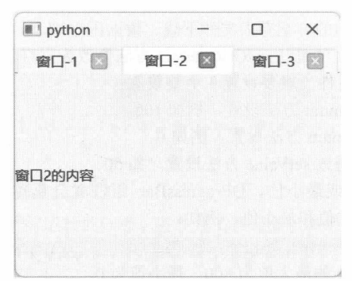
图11-19 标签页视图